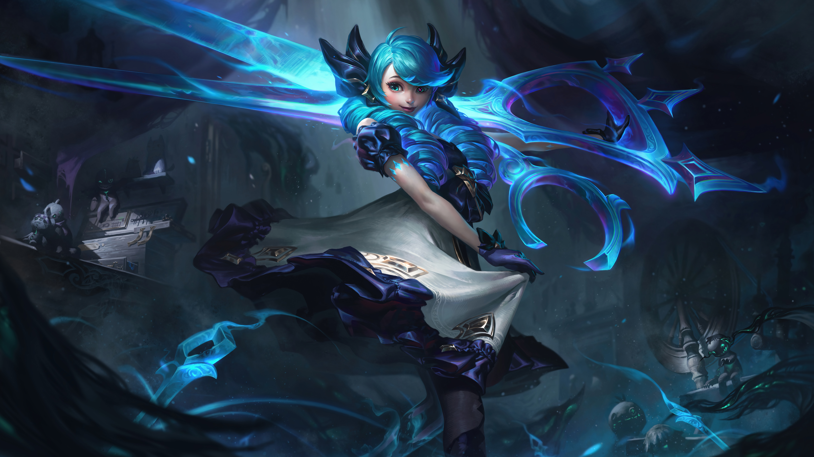

Historia
Informacion
make a list of the character
 Mil cortes:
Mil cortes:
Los ataques de Gwen infligen daño mágico adicional según la vida de los objetivos.
Se cura una parte del daño que inflige a campeones con este efecto. ¡A cortar!:
¡A cortar!:
Gwen corta con sus tijeras hasta 6 veces en un cono para inflingir daño mágico.
Gwen inflige daño verdadero a unidades en el centro y les aplica su pasiva con cada corte. Niebla Sagrada:
Niebla Sagrada:
Gwen invoca niebla que la protege de los enemigos que estan fuera de ella.
Solo los enemigos que entren a la niebla la pueden fijar como objetivo. Costura Letal:
Costura Letal:
Gwen se desplaza una corta distancia para luego obtener velocidad de ataque y daño mágico al impacto durante unos segundos.
Si impacta a un enemigo en ese tiempo, el enfriamento de esta habilidad se restablece parcialmente. Ráfaga de Agujas:
Ráfaga de Agujas:
Gwen lanza una aguja que ralentiza a los enemigos alcanzados, inflige daño mágico y aplica "Mil Cortes" a los campeones impactados.
Esta habilidad se puede lanzar hsata dos veces más. Cada lanzamiento arroja agujas adicionales e inflige más daño.
Momentos desde la llegada.
- Lanzamiento (2021)
Gwen fue lanzada el 15 de abril de 2021 en el parche 11.8 de League of Legends.
Su llegada marcó un punto importante porque introdujo una luchadora AP para la calle superior (top lane) con mecánicas únicas.
Desde su salida, destacó por su escalado fuerte a juego tardío. - Dominio en el meta competitivo (2021-2022)
Tras su lanzamiento, Gwen se convirtió en prioridad en ligas profesionales y torneos internacionales como el League of Legends World Championship.
Fue considerada: Una de las mejores campeonas AP de top, excelente contra tanques, fuerte en composiciones de teamfight prolongadas.
Su presencia en competitivo llevó a múltiples ajustes y nerfs para balancearla. - Ajustes y rework parcial (2022)
Debido a su alto rendimiento en profesional pero rendimiento irregular en solo queue, recibió cambios importantes: Ajustes en escalados, modificaciones en daño temprano, enfoque más claro hacia el juego tardío.
Estos cambios redefinieron su identidad: menos opresiva en early game, pero aún peligrosa en late. - Estabilidad actual y rol definido
Actualmente, Gwen se mantiene como: Pick situacional fuerte contra composiciones con frontline, campeona de escalado que requiere buena ejecución mecánica, selección estratégica más que “pick obligatorio”.
Hoy en día no domina el meta como en su lanzamiento, pero sigue siendo relevante en rangos altos y competitivo cuando el draft lo favorece.
Ficha tecnica
| Edad | Desconocida (aparenta entre 18-22 años;
originalmente fue una muñeca creada siglos atrás en las Islas de la Sombra) |
| Peso | No especificado oficialmente |
| Estatura | No especificada oficialmente (aprox. 1.65 m. Estimación basada en proporciones dentro del juego) |
| Primera aparicion | 2021, en League of Legends |
| Regio de Runetrra | Islas de la Sombra |
| Rol | Luchadora / AP Bruiser (línea superior principalmente) |
| Arma | Tijeras mágicas gigantes |
| Debilidades | Vulnerable a control de masas fuerte (stuns, suppressions), poke a larga distancia, campeones con burst explosivo antes de que escale |
| Alias | “La Costurera Sagrada” |
Registro de fans
Crea una cuenta para unirte a nuestro club y poder conocer las experiencias de los demas.
Galeria
